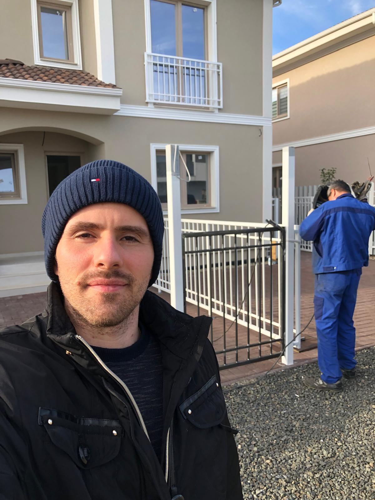

Niponn General Company
Suntem specializați în confecții metalice de calitate, cu experiență de peste 20 de ani. Oferim servicii
rapide și profesionale pentru orice proiect metalic.
Serviciile noastre:
Contactați-ne: west_flo70@yahoo.com | Tel: 0771 623 831
Sudură în acțiune

În atelierul nostru, fiecare sudură este realizată cu precizie și atenție la detalii, pentru proiecte
durabile și sigure.